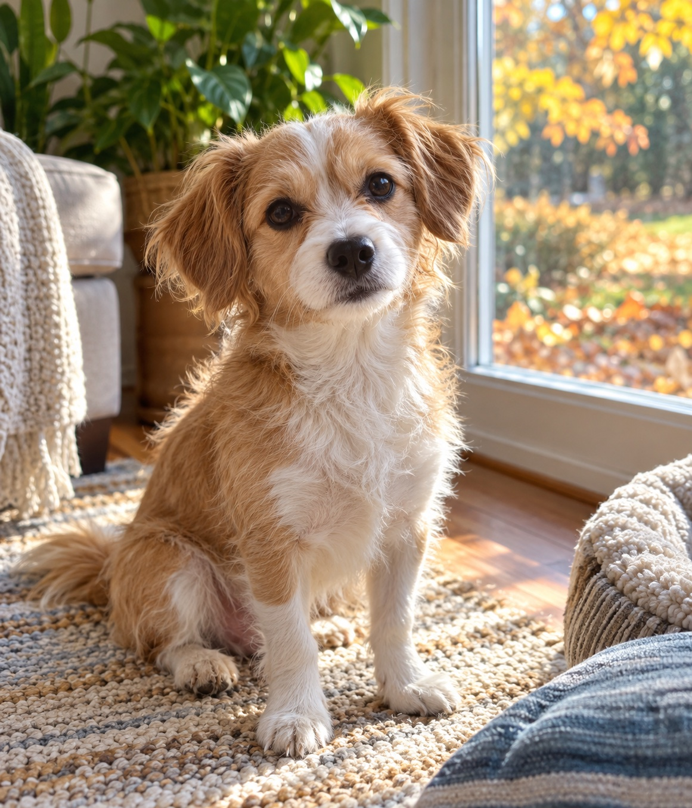

Choose a JPG, PNG, or WebP visit photo on your device.
For independent pet sitters
A clear note after every visit.
Write what you actually observed and give the pet’s family a simple update they can keep. The free visit note works in your browser without signup.
Pet’s name (optional) → visit date (optional) → your observation → copy or print
Your note stays in this browser session. You choose how to send it to the family.
What to put in a visit note
Start with a specific observation: what the pet did, ate, or enjoyed during this visit. Include any care detail the owner needs through your usual messaging channel. Keep the note factual and avoid guessing how the pet felt.
For example: “Milo watched leaves by the window after his walk, then rested on his blanket.” The name and date are optional in the free tool; the observation is required. You can copy the finished text or use your browser’s print dialog to save a PDF.
Optional photo postcard examples
If you also want a photo keepsake, these examples show three possible layouts. Each uses the same photo and observation for comparison. The photo is AI-created; Milo, Sam, and the visit note are fictional.

ADVENTURE LOGMilo’s DayOctober 20, 2026Milo watched leaves, then rested by the window.— Sam
FIELD NOTESNotes on MiloOctober 20, 2026Milo watched leaves, then rested by the window.— Sam
GREETINGSHello from MiloOctober 20, 2026Milo watched leaves, then rested by the window.— Sam
Illustrative page previews follow the app’s three layouts. The downloaded card is a 1800 × 1200 px JPG or a one-page, 6 × 4 inch PDF.
How the optional photo card works
Add a short observation in your own words. Nothing is invented or rewritten.
Pick a style, check the preview, then download a JPG or a print PDF.
Print the PDF at Actual size / 100% on 6 × 4 inch photo paper. A low-resolution photo prompts a warning.
Free note and optional photo card
The free visit note finishes a text update for one visit. A separate $5 app adds a photo card if you want to give the family something they can save or print.
| What you get | Free visit note | Photo postcard app · $5 once |
|---|---|---|
| Finished result | Text note you can copy or print | Postcard with one photo and your observation |
| Styles | Plain visit note | Adventure Log, Field Notes, Hello From |
| Saved files | Browser print / save as PDF | JPG and 6 × 4 inch print PDF |
| Where input goes | Stays in your browser | Stays in your browser |
Want a photo card too?
The optional Pet Adventure Postcard Studio is a $5 one-time ZIP for a computer browser. It makes a JPG or 6 × 4 inch print PDF from a permitted visit photo and your own words. Phone-only ZIP and export use has not been verified.
The Gumroad product page has the full contents, device caveat, checkout total, and 14-day refund details. Payment and file delivery happen on Gumroad.